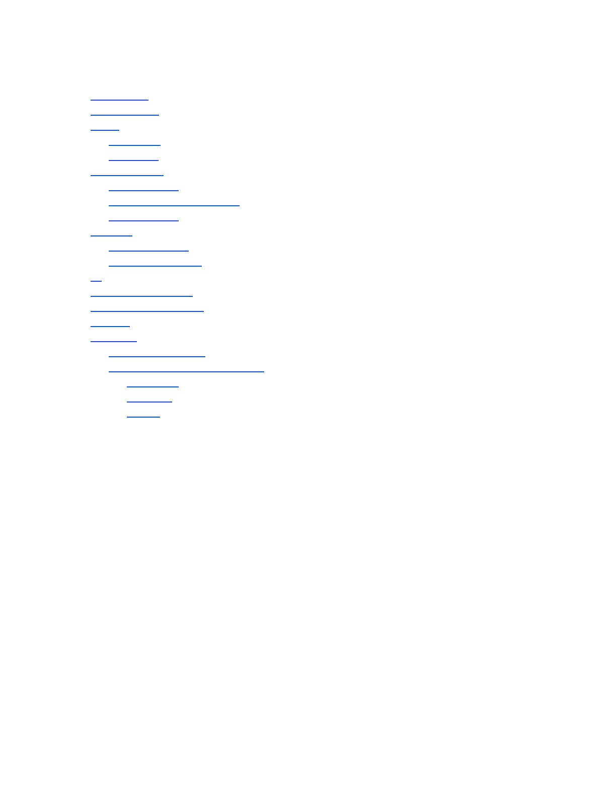
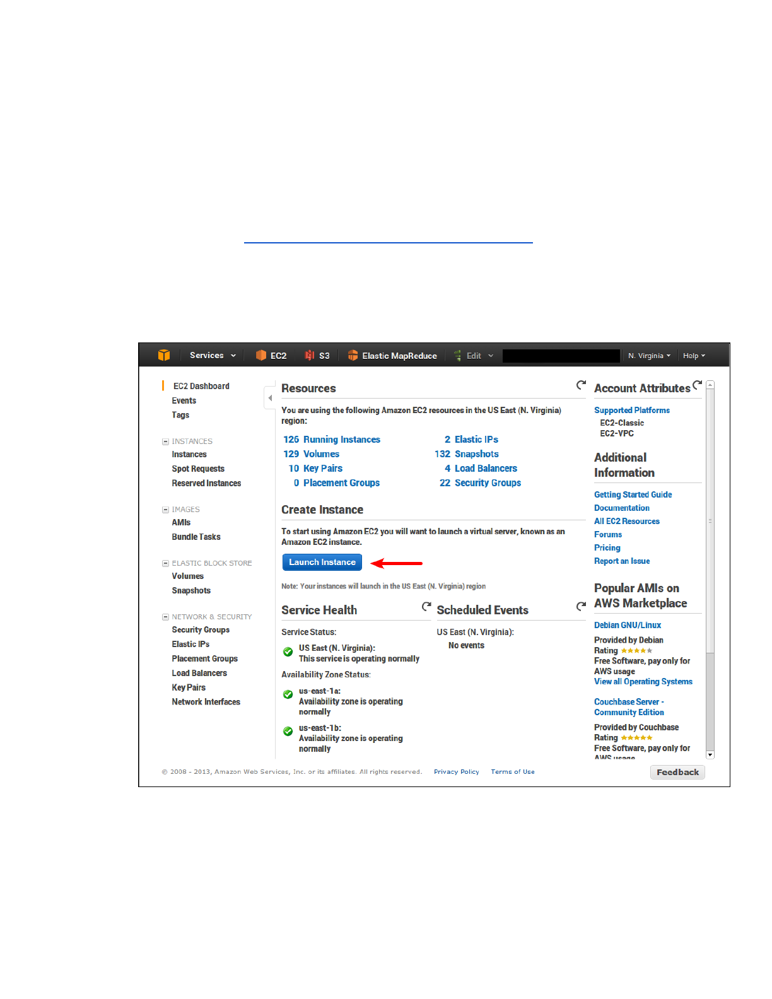
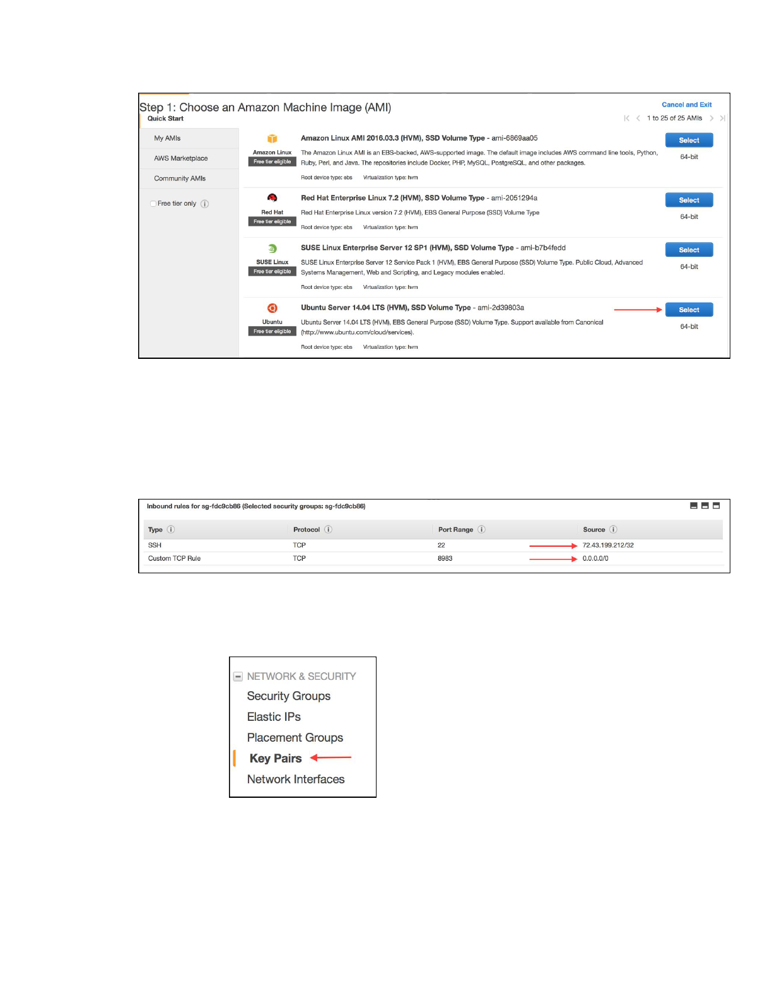
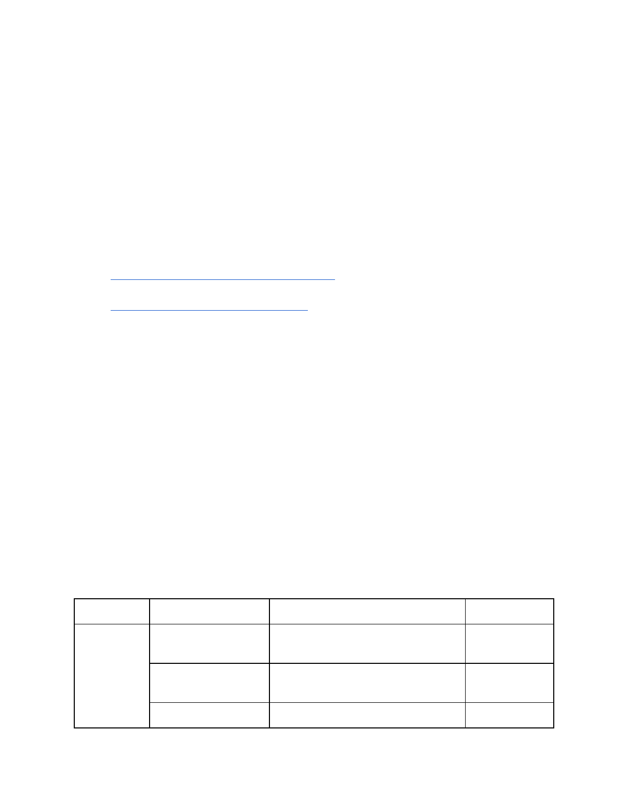
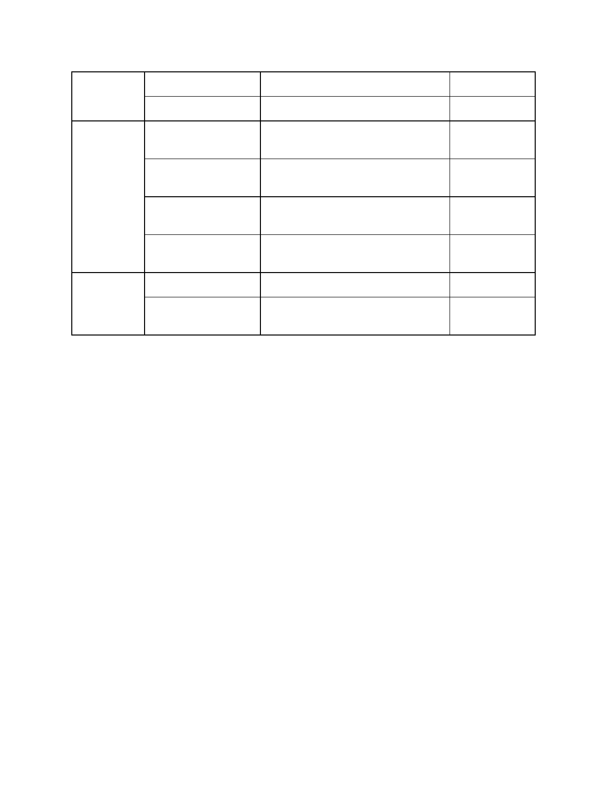

CSE435/535InformationRetrieval
ProjectOne:DataingestionandSolrsetup
DueDate:19thSeptember2016,23:59EST/EDT
Version1.0(8/31/16)
1

Introduction
Prerequisites
Setup
EC2setup
Solrsetup
Collectingdata
Authentication
StreamingandRESTAPIs
TwitterClients
Indexing
Solrterminology
Indexingstrategies
UI
Projectrequirements
Submittingyourproject
Grading
Appendix
Characterencoding
Emoticons,EmojisandKaomoji
Emoticons
Kaomojis
Emojis
2
1. Introduction
Theprimarypurposeofthisprojectisintroducestudentstothedifferenttechnicalaspects
involvedinthiscourseandsubsequentprojects.Bytheendofthisproject,astudentwould
haveachievedthefollowing:
● SetupanAWSaccountandsimpleEC2instances
● LearnabouttheTwitterAPI,andqueryingtwitterusingkeywords,languagefiltersand
geographicalboundingboxes
● SetupaSolr(afullyfunctionality,textsearchengineinJava)instanceunderstandbasic
Solrterminologyandconcepts
● Indexthousandsoftweetsinmultiplelanguages
● Setupaquickanddirtysearchwebsiteshowcasingtheircollecteddataand
implementingfacetedsearch..
Thespecificchallengesincompletingthisprojectareasgivenbelow:
● Figureoutspecificqueryterms,hashtags,filtersetctouseinordertosatisfythedata
queryingrequirements.
● CorrectlysetuptheSolrinstancetoaccommodatelanguageandTwitterspecific
requirements
Therestofthisdocumentwillguideyouthroughthenecessarysetup,introducekeytechnical
elementsandthenfinallydescribetherequirementsincompletingtheproject.Thisisan
individualprojectandalldeliverablesMUSTbesubmittedby19thSeptember23:59EST/EDt
2. Prerequisites
WewouldbeusingAmazonAWSforallprojectsinthiscourse.Beforewebegin,youwould
thusneedtosignupforanAWSaccountifyoudon’talreadyhaveone:
https://aws.amazon.com.Althoughthesignuprequiresacreditcardforverificationpurposes,
youcanuseagiftcardinstead.Notethatyoucanevenshareagiftcardamongstagroupifyou
desire.Wedonotanticipatestudentsusingmorethantheirfreetierallocation.
UBisapartoftheAWSeducateprogram.Itgivesyou$100inannualcredit.Followinstructions
athttps://aws.amazon.com/education/awseducate/toclaimafteryouhavesignedupforyour
AWSaccount.
YouwillalsoneedaTwitteraccounttobeabletousetheTwitterAPIforquerying.
3

3. Setup
3.1. EC2setup
Althoughthereareseveralguidesavailable,instructionshereareadaptedfromSolr’s
EC2guidehere:https://wiki.apache.org/solr/SolrOnAmazonEC2
1. LogintoyourAWSaccountandnavigatetotheEC2dashboard.
2. Createaninstance
a. Clickon“LaunchInstance”
b. SelectanAMItype.Forthisdemo,weareusingUbuntu14.04LTS
4

c. Chooseaninstancetype.Wekeepthedefaultoption(Generalpurpose,
t2.micro).Youmayneedtochangethistot2.smallforyourprojectlater.
d. Keepthedefaultoptionsforsteps3,4and5(ConfigureInstance,Add
StorageandTagInstance)
e. Createanewsecuritygroup.ProvideaccesstoSSHforyourIPand
globalaccessforport8983.WewilllaterprovideamorerestrictedIPlist.
YoucouldrestrictittoyourIPforthetimebeing.
f. ReviewandLaunch!
3. Createakeypairtologintoyourinstance.
a. Clickon“KeyPairs”underthe“NetworkandSecurity”groupintheleft
pane
b. Createanewkeypairbygivingitsomemeaningfulname.Downloadand
savethefile.FormostUnix/Linuxbasedsystems~/.sshisagoodplace.
However,makesurethatthesecuritypermissionsonthefolderaresetto
justyou.
4. Loginandverify.
5
a. Bynowyourinstancemustbeupandrunning.Finditshostnameorip
address.
b. Loginusingsshas:sshi~/.ssh/[KEYNAME.pem]
ubuntu@[HOSTNAME]
3.2. Solrsetup
ItisfairlyeasytohaveaSolrinstanceupandrunning,atleastforsanitychecks.
1. ChoosesomelocationwhereyouwouldinstallSolr.Say~/solr.
2. Navigatetothatdirectoryanddownloadsolr:curlO
http://www.gtlib.gatech.edu/pub/apache/lucene/solr/6.2.0/solr6
.2.0.tgz
3. Untar:tarxfsolr6.2.0.tgz
4. InstallJava8
sudoaddaptrepositoryppa:webupd8team/java
sudoaptgetupdate
sudoaptgetinstalloraclejava8installer
5. Startastandaloneserver:bin/solrstartp8983etechproducts
6. Verifytheinstanceworks.Openhttp://<ipaddress:8983>/solrinbrowser.
7. Indexdatausing:bin/postctechproductsexample/exampledocs/*.xml
8. Verifydataisindexed.
4. Collectingdata
TherearethreemainelementsthatyouneedtoknowwithregardstousingtheTwitterAPI:
Authentication,StreamingvsRESTAPIsandTwitterClients.
4.1. Authentication
TwitterusesOAuthtoauthenticateusersandtheirrequeststotheavailableHTTP
services.ThefullOAuthdocumentationislongandexhaustive,soweonlypresentthe
relevantdetailshere.
Forthepurposeofthisproject,weonlywishtouseourrespectiveTwitteraccountsto
querypublicstreams(moreaboutthatinthefollowingsection).Thesuggested
authenticationmechanismforthisusecaseisgeneratingtokensfromdev.twitter.comas
follows:(adaptedfrom
https://dev.twitter.com/oauth/overview/applicationowneraccesstokens)
● LogintoyourTwitteraccount(createoneifhaven’talreadydoneso)
● Navigatetoapps.twitter.com
● Clickon“CreateNewApp”ontheupperrightcorner.
6
● Fillinallrequiredfields.Theactualvaluesdonotreallymatterbutfillingsome
meaningfulvaluesisrecommended.
● Oncecreated,withintheapplicationdetails,youwouldgetanoptionto“Create
myaccesstoken”
● Clickonthelinkandgenerateyouraccesstoken.
● Attheendofthisstep,youshouldhavevaluesforthefollowingfourfieldsunder
the“KeysandAccessTokens”tab:ConsumerKey,ConsumerSecret,Access
TokenandAccessTokenSecret.Youwillneedthesefourvaluestobeableto
connecttoTwitterusingaclientandqueryingfordata.
4.2. StreamingandRESTAPIs
Weareonlyconcernedaboutqueryingfortweetsi.e.wedonotintendtoposttweetsor
performanyotheractions.Tothisend,TwitterprovidestwotypesofAPIs:REST(which
mimicssearch)andStreaming(thatserves“Live”data).
Youareencouragedtoexperimentwithbothtoseewhichonesuitsyourneedsbetter.
Youmayalsoneedacasebycasestrategysearchwouldgiveyouaccesstoolder
dataandmaybemoreusefulincasesufficientvolumesdon’texistatagiventime
instant.Ontheotherhand,theStreamingAPIwouldquicklygiveyouthousandsof
tweetswithinafewminutesifsuchvolumesexist.BothAPIsreturnaJSONresponse
andthus,youwouldneedtogetyourselffamiliarizedwiththedifferentfieldsinthe
response.
Pleasereaduponthequerysyntaxandotherdetailshere:
https://dev.twitter.com/rest/public/search.Youmaybeinterestedinreadinguponhow
tweetscanbefilteredbasedonlanguageand/orgeolocation.Thesemayhelpyouin
satisfyingyourlanguagerequirementsfairlyquickly.
Similarly,documentationfortheStreamingAPIispresenthere:
https://dev.twitter.com/streaming/overview/requestparameters.Sincewearenotworried
aboutexactdates(butonlyranges),eitheroftheAPIsoracombinationmaybeused.
WeleaveittoyourdiscretionastohowyouutilizetheAPIs.
4.3. TwitterClients
Finally,thereisaplethoraofTwitterlibrariesavailablethatyoucanuse.Asubstantial
(thoughpotentiallyincomplete)listispresenthere:
https://dev.twitter.com/overview/api/twitterlibraries.Youarewelcometouseanylibrary
basedonyourcomfortlevelwiththelibraryand/orthelanguageused.
7
5. Indexing
Beforewedescribetheindexingprocess,weintroducesometerminology.
5.1. Solrterminology
● Solrindexeseverydocumentsubjecttoanunderlyingschema.
● Aschema,muchakintoadatabaseschema,defineshowadocumentmustbe
interpreted.
● Everydocumentisjustacollectionoffields.
● Eachfieldhasanassignedprimitive(data)typeint,long,String,etc.
● Everyfieldundergoesoneofthreepossibleoperations:analysis
,index
orquery
● Theanalysisdefineshowthefieldisbrokendownintotokens,whichtokensare
retainedandwhichonesaredropped,howtokensaretransformed,etc.
● Bothindexingandqueryingatalowlevelaredeterminedbyhowthefieldis
analyzed.
Thus,thecrucialelementisconfiguringtheschematocorrectlyindexthecollected
tweetsaspertheprojectrequirements.Everyfieldismappedtoatypeandeachtypeis
boundtoaspecifictokenizer,analyzerandfilters.Theschema.xmlisresponsiblefor
definingthefullschemaincludingallfields,theirtypesandanalyzing,indexingdirectives.
Althoughafulldescriptionofeachanalyzer,tokenizerandfilterisoutofthescopeofthis
document,agreatstartingpointisatthefollowingwikipage;
https://cwiki.apache.org/confluence/display/solr/Understanding+Analyzers,+Tokenizers,+
and+Filters.Youareencouragedtostarteitherinaschemalessmodeorstartwiththe
defaultschema,experimentwithdifferentfiltersandworkyourwayfromthere.
5.2. Indexingstrategies
Thisisthepartwherestudentsneedtofigureouttheappropriatewaytoindextheir
collectedtweets.Overall,therearetwooverarchingstrategiesthatyoumustconsider:
● Usingoutoftheboxcomponentsandconfigurethemcorrectly.Forexample,the
StopFiltercanbeusedtofilteroutstopwordsasspecifiedbyafilelistedinthe
schema.Thus,attheveryminimum,youwouldberequiredtofindlanguage
specificstopwordlistsandconfigurethefiltersforcorrespondingtypefieldsto
omitthesestopwords.
● Preprocessingtweetsbeforeindexingtoextracttheneededfields.Forexample,
youcouldpreprocessthetweetstoextractallhashtagsasseparatefields.Here
again,itislefttoyourchoiceofprogramminglanguageand/orlibrariestoperform
thistask.Youarenotrequiredtosubmitthiscode.
8

Solrsupportsavarietyofdataformatsforimportingdata(xml,json,csv,etc).Youwould
thusneedtotransformyourqueriedtweetsintooneofthesupportedformatsandPOST
thisdatatoSolrtoindex.
6. UI
Thisistheeasiestpart.Wewillbeprovidingafullyfunctionalwebsite(htmlfiles,JSfiles,CSS
etc).TheonlychangeyouwouldberequiredtodoischangetheURLtopointtoyourSolr
instanceinonefile.Alaterversionofthisdocumentwouldaddmoredetailsaboutgettingthe
websitecode,whatfilestochangeetc.Ifyouhavenamedyourfieldscorrectly,thewebsite
shouldworkasrequiredrightafterthechangewithoutanyadditionalchanges.
7. Projectrequirements
Wenowdescribetheactualproject.Asmentionedbefore,themainpurposeofthisprojectisto
indexareasonablevolumeoftweetsandperformrudimentarydataanalysisonthecollected
data.Wearespecificallyinterestedintweetsonthefollowingtopics:
● USPresidentialelections(Politics)
● SyrianCivilWar(WorldNews)
● USOpenTennis(Sports)
● SeptemberAppleevent,iPhone7,Watch2etc(Tech)
● Anadditionalsurprisetopicwouldbedisclosedbetween9/59/11
ApartfromEnglish,youshouldcollecttweetsinthefollowinglanguages:
● Spanish
● Turkish
● Korean
Theabovetopicsareintentionallyspecifiedinabroadsenseandthisbringsustothefirsttask
youneedtoperform.
Task1:Figureouttherequiredsetofqueryterms,languagefilters,geolocationfiltersand
combinationsthereoftocrawlandindextweetssubjecttothefollowingrequirements:
1. Atleast50,000tweetsintotalwithnotmorethan15%beingretweets.
2. Atleast10,000tweetspertopic.
3. Atleast5,000tweetsperlanguageotherthanEnglish,i.eSpanish,TurkishandKorean
4. Atleast5,000tweetscollectedperdayspreadoveratleastfivedays,i.e.,forthe
collecteddata,thetweetdatesmusthaveatleastfivedistinctvaluesandforeachsuch
daytheremustbeatleast5,000tweets.Essentially,youcannotcollectsay20,000
tweetsononedayandsplittherestbetweenotherfourdays.
9

Notethattheabovearetheminimumrequirements.Youarefreetocrawltweetsinother
languagesoutsidethislist(orcrawltweetswithoutalanguagefilterforexample)aslongasthe
aboverequirementsaremet.Further,thisdatawouldbevalidatedagainstyourSolrindex.
Thus,basedonhowyousetupyourindexing,youmaylosesometweetsand/orhaveduplicates
thatmayreduceyourindexedvolumes.Hence,itisencouragedthatyouaccommodatesome
bufferduringthecrawlingstage.
Onceyouhavecollectedyourtweets,youwouldberequiredtoindextheminaSolrinstance.
Youwouldneedtotweakyourindexingtoadheretotwodistinctsetsofrequirements
languagespecificandTwitterspecificasdescribedbelow.PleaseseethesectiononGrading
forsomesamplequeriesthatyoursystemmustbeabletohandle.
Task2:Indexthecollectedtweetssubjecttothefollowingrequirements:
1. Underlyingtweettopic:oneamongstpolitics,news,entertainment,sportsandtech.
2. Onecopyofthetweettextthatretainsallcontent(seebelow)irrespectiveofthe
language.Thisfieldshouldbesetasthedefaultfieldwhilesearching.
3. Languageofthetweet(asidentifiedbyTwitter)andalanguagespecificcopyofthe
tweettextthatremovesallstopwords(languagespecific),punctuation,emoticons,
emojis,kaomojis,hashtags,mentions,URLsandotherTwitterdiscoursetokens.Thus,
youwouldhaveatleastfiveseparatefieldsthatindexthetweettext,thegeneralfield
aboveplusfourforeachlanguage.Foranygiventweet,onlytwoofthefivefieldswould
haveavalue.
4. Separatefieldsthatindex:hashtags,mentions,URLs,emoticons+(emoticons+emojis
+kaomojis)
5. Additionallyindexdate,geolocation(ifpresent),andanyotherfieldsyoumaylike.
Asafinalrequirement,youwouldbehostingasimplewebapplicationthatconnectstoyourSolr
instanceandallowsyoutotestandvalidateyourindexeddata.
Task3:Hostasimplewebapplicationthatsatisfiesthefollowingrequirements.Atthemoment
youarenotrequiredtotweakthedefaultresultsreturnedbySolr.Thistaskismoretohelpthe
studentsinvalidatingtheirindexesthanevaluation.
1. HostamodifiedversionoftheAjaxSolrwebappwithmostofthedefaultfunctionality
retained.
2. Createfacetsforgeneraltextkeywords,languagespecifictextkeywords,date,and
emoticons+.
3. Createamapbasedfacetusinggeolocation.
10

8. Submittingyourproject
WewouldusetheCSEsubmitscript.YouwouldberequiredtosimplysubmittheURLofyour
EC2instanceinatextfileaspartofyoursubmissions.Somenamingconventionsarerequired
tobeusedasdescribedbelow:
1. Nameyoursubmissionasproject1.txt.ItshouldonlycontaintheIPaddressofyourEC2
instance.
2. Runyoursolrinstancesonport8984.Makesurethattheportisaccessible.
3. NameyourSolrinstanceasIRF16P1.SoiftheIPaddressofyourEC2instanceis
aa.bb.cc.dd,theSolrquerypageshouldbeaccessibleas
http://aa.bb.cc.dd:8984/solr/#/IRF16P1/query
4. Nameyourwebapplicationlandingpageassearch.html.SothewebsiteURLbecomes
http://aa.bb.cc.dd:8984/solr/search.html
5. Thefieldnamesareasgivenbelow
● topic:Oneofthefivetopics
● tweet_text:Defaultfield
● tweet_lang:LanguageofthetweetfromTwitterasatwolettercode.
● ttext_xx:Forlanguagespecificfieldswherexxisatleastoneamongsten
(English),es(Spanish),tr(Turkish)andko(Korean)
● hashtags,mentions,tweet_urlsandtweet_emoticonsfortherespectiveself
explanatoryvalues
● tweet_date:Dateofthetweet,roundedtothenearesthourandinGMT
● tweet_loc:Geolocationofthetweet.
Tosubmityourproject,fromanyCSEserverrunsubmit_435orsubmit_535basedonyour
enrollment(435forundergrads,535forgrads).
9. Grading
Thisprojectisworthatotalof10points,thesearedistributedasfollows:
Task
Criterion
Description
Points
Task1
Tweetvolumes
Validateatleast50,000tweets+at
least10,000tweetspertopic
1
Languagevolumes
Validatelanguagevolumesatleast
5,000tweetsfortr,koandes
0.5
Datecriterion
Validateatleastfivedayswithat
1
11

least5,000tweets
Retweetcounts
Validateatmost15%retweets
0.5
Task2
Sanity
ValidateSolrinstanceruns+canrun
somequeries
1
Schemavalidation
Allfieldsarenamedasrequired,
containvaluesasrequiredetc.
1.5
Topicadherence
AnalysisoftopKtermsbytopic,
languageanddate
1.5
Datasanity
AnalysisbasedontopKhashtags,
URLs,mentionsandemoticons
1
Task3
Websitesanity
Canreachwebsiteandrunqueries
1
Componentsanity
Individualfacetcomponentsworkas
expected
1
Wewillrunthegradingscriptoncebeforethedeadline(dateTBD),allowingyoutoperforma
sanitycheckofyoursubmission.Thefinalgradingscriptwillbetriggeredrightatmidnightand
thusanylatesubmissionswillnotbeconsidered.
Appendix
Characterencoding
Oneofthefirstissuesyoumightencounterorhavetodealwithischaracterencoding.Every
writtencharacterisencodedusingoneortheothercharactersets.Mostprograms(including
yourbrowser,favoritetexteditor,etc.)usesomedefaultencodingthatisusuallydeterminedby
youroperatingsystem.WhileusingEnglishormostLatinderivedlanguages,theASCII
charactersetissufficientanddoesnotposemajorproblems.However,mostotherlanguages
wehavechosenforthisprojectuseextendedcharactersets.Formostscenarios,UTF8
encodingmightsuffice.
However,thereistheissueofUTF16encodingandUnicodecharacters.Somelanguageslike
ChineseandKorean,requiretwobytestostoreonecharacter(asagainsttheusualnormofone
bytepercharacter).Theselanguagesthus,sometimesrequireUTF16encodingthatallows
storingtheseextendedcharactersets.
Unicodeisanindustrystandardthatsupportsabout128,000differentcharacters.Itissplitinto
differentcodepointrangesandeacheachrangeismappedtoacharacterrange.Wedescribe
12
therelevantcodepointsforemojisinthefollowingsection.However,wementionUnicodehere
tomakeapointthateverycharacter(usinganycharacterset)ismappedtoauniqueunicode
code.Soyoumayencounterthetermsunicode,UTF8andUTF16interchangeablyinrelevant
documentationandshouldlearnmoretounderstandthenuances.
Finally,incaseyoustartseeinggarbledcharacterswhenyoutryandreadyourtweets,check
yourencoding!
Emoticons,EmojisandKaomoji
Eventhoughtheyareusedforsimilarpurposestoexpressdifferentemotions;emoticons,
emojisandkaomojisusedifferentcharactersets.
Emoticons
Emoticonsarepredominantlyrepresentedusingpunctuation,lettersandnumbers.Thus,in
mostscenariostheASCIIcharactersetissufficienttoexpressallemoticons.However,agiven
emoticonmayhaveseveralvariants(:),:),:]areallsmileyfacesforexampy,le).Further,the
overloadedusageofcommoncharactersmakesithardtoprogrammaticallydistinguishbetween
punctuationusageandemoticons.Forexample,aregularexpressiontryingtomatch
contiguouspunctuationwouldmatchboth‘!!!!’and‘:)’.Usingacuratedlexiconmayprovidea
decentamountofprecisionbutmaysufferintermsofrecall.
Kaomojis
Thereisanalternate“Japanese”styleofemoticons((_;)and(╯°□°）╯︵┻━┻forexample)
thatdoesnotrequiretiltingone’sheadtounderstandtheemoticon.Theyuseextended
charactersets,mayormaynotbeenclosedwithinparenthesisandagain,couldhavemultiple
variants.Culturally,theymaybemorefrequentinsomelanguages(Korean,Japanese)than
others(Turkish,English).
Emojis
Emojislike,andontheotherhandaremoreexpressiveideogramsthatinsteadusedistinct
charactersets.Unicode9.0reserves1,123charactersspreadacross22codeblocksasemojis.
Recently,applicableemojismaybeannotatedwithFitzpatrickmodifierstoindicatediversity(
toforexample).Oneofthedecisionsthatyoumayhavetomakeistofigureoutifyouwould
usetheFitzpatrickmodifiersinyourindexingprocess(i.epreservethemodifications)orignore
themcompletelyandonlystorethedefaultemoji.
Emojismayappeardifferentlybetweendifferentoperatingsystems.However,allofthemmapto
thesameunderlyingunicodecharacter.Thus,althoughemojishavefixedunicoderanges,they
13

areslightlymorechallengingtohandleprogrammatically.Youareencouragedtolookatspecific
examplesofhandlingemojisintheprogramminglanguageyouintendtouse.
14